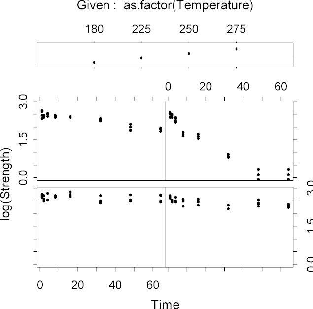

| / Home |
Keywords: two-way analysis of variance, nonlinear regression, gamma regression, dispersion modelling
These data are the result of a study involving the analysis of performance degradation data from accelerated tests. The response variable is dialectric breakdown strength in kilo-volts, and the predictor variables are time in weeks and temperature in degrees Celcius. The study can be viewed as an 8 by 4 factorial experiment.
| Variable | Description | ||
| Strength | Dialectric breakdown strength in kilovolts | ||
| Time | Duration of testing in weeks (8 levels) | ||
| Temperature | Temperature in degrees Celsius (4 levels) | ||
Data File (tab-delimited text)
| Nelson, W. (1981). Analysis of performance-degradation data. IEEE Transactions on Reliability, 2, R-30, 149-155. |
| NIST Standard Reference Data Sets. |

The reference analysis according to NIST gives
log[Stength] = b1 - b2*Time * exp[-b3*Temperature] + e
Certified Values
Parameter Standard Deviation
b1 2.5906836021E+00 1.9149996413E-02
b2 5.6177717026E-09 6.1124096540E-09
b3 -5.7701013174E-02 3.9572366543E-03
The data is actually slightly better modelled as gamma or Poisson-gamma rather than log-normal:
> dglm(log(Strength)~ordered(Time)*ordered(Temperature),family=tweedie(var.power=0,link.power=1),method="ml")$m2loglik+2*sum(log(Strength)) [1] 309.5124 > dglm(Strength~ordered(Time)*ordered(Temperature),family=tweedie(var.power=2,link.power=0),method="ml")$m2loglik [1] 309.2368 > dglm(Strength~ordered(Time)*ordered(Temperature),family=tweedie(var.power=1.8,link.power=0),method="ml")$m2loglik [1] 303.5884
|
Home - About Us -
Contact Us Copyright © Gordon Smyth |